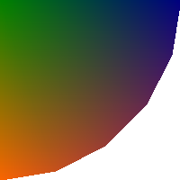
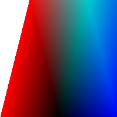
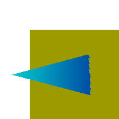

All options can be abbreviated to their shortest unique prefix. You may use two hyphens instead of one to designate an option. You may use either white space or an equals sign between an option name and its value.
This program is part of Netpbm.
pamtris can be used to draw a great variety of 2D and 3D graphics by composing arbitrarily complex pictures out of separate triangles, triangle strips and triangle fans. The program reads instructions written in a simple command script notation from Standard Input and outputs its results as a (potentially multi-image) PAM stream on Standard Output.
For example, the following input
mode fan
attribs 0 128 0
vertex 0 0 1
attribs 0 0 128
vertex 200 0 1
attribs 50 20 103
vertex 190 61 1
attribs 100 40 78
vertex 161 117 1
attribs 150 60 53
vertex 117 161 1
attribs 200 80 28
vertex 61 190 1
attribs 250 100 3
vertex 0 200 1
print
produces this:
The input file gives triangle data by setting the appropriate drawing mode, if necessary, and then providing a list of vertices. Each vertex is also associated with a list of up to 20 "attributes," which are integer values between 0 and a given maxval. In the most common usage, you use pamtris to draw a visual image and a vertex has three attributes, which are an RGB specification of a color. Such attribute lists may be provided on a per-vertex basis.
Before images can be effectively written to Standard Output, pamtris gradually rasterizes them on an internal frame buffer which consists of an "image buffer" and a "depth buffer." The image buffer consists of a sequence of height rows containing a sequence of width tuples. There is one sample for each vertex attribute in every tuple plus an opacity (alpha) sample. Each tuple in the image buffer is also associated with an integer depth in the depth buffer, which determines whether subsequent drawing operations affect that particular tuple or not. This provides a way of depth-sorting graphical objects which is adequate for many purposes in 2D and 3D computer graphics. One prominent shortcoming of such an approach to depth-sorting, however, is that it does not automatically work with objects which are intended to appear "translucent," therefore requiring more elaborate strategies to incorporate said objects into pictures generated using this technique.
The opacity sample is the last sample of the tuple. pamtris manipulates opacity internally and for any tuple it is always either 0 or the maxval. The program does not provide the user direct control over the alpha image plane.
pamtris rasterizes triangles by approximating their visible area as a collection of tuples at particular positions in the frame buffer, and to each sample of every such tuple it assigns a value which is a perspective-correct interpolation between the values of the corresponding attribute for each vertex of the triangle. Whenever a tuple within the area of the frame buffer is produced, it is written to the corresponding position in the frame buffer if and only if it passes a depth test. This test works as follows: the depth value of every incoming tuple (which is itself an interpolation between the Z-coordinates of the vertices of the corresponding triangle) is compared against the value in the corresponding position in the depth buffer. If the depth value of the incoming tuple equals or is smaller than the depth value already present in said position in the depth buffer, the following happens.
Otherwise, that particular tuple effects no change at all in the frame buffer.
The frame buffer is initially set so that all samples in every tuple of the image buffer contain the value 0, and all entries in the depth buffer contain the maximum permitted depth value.
The attributes' values, and therefore the samples in the output PAM images, have no fixed interpretation ascribed to them (except for the last image plane, which is deliberately supposed to represent tuple opacity information); one may ascribe any suitable meaning to them, such as that of colors, texture coordinates, surface normals, light interaction characteristics, texture influence coefficients for multi-texturing, etc.
The following command generates the image from the fan mode example at the top of the DESCRIPTION section. If the file fan.tris contains that code, you could process it with:
$ pamtris -height=200 -width=200 -rgb <fan.tris >fan.pam
The following is an example of strip mode:
mode strip
attribs 255 0 0 # red
vertex 0 200 1
vertex 50 0 1
attribs 0 0 0 # black
vertex 100 200 1
attribs 0 205 205 # cyan
vertex 150 0 1
attribs 0 0 255 # blue
vertex 200 200 1
vertex 250 0 1
print
Save the above code in a file named strip.tris (for instance) and process it with:
$ pamtris -height=200 -width=200 -rgb <strip.tris >strip.pam
to yield:

The following is an example of triangle mode:
# yellow square
mode strip
attrib 155 155 0
vertex 50 50 100
vertex 50 200 100
vertex 200 50 100
vertex 200 200 100
# blue triangle
mode triangles
attrib 0 205 205
vertex 20 125 70
attrib 0 0 140
vertex 230 70 120 # Change "120" and see what happens
vertex 230 180 120 #
print
Save the above code in a file named pierce.tris (for instance) and process it with:
$ pamtris -height=200 -width=200 -rgb <pierce.tris >pierce.pam
to yield:

The pamtris command language is much too rudimentary to be used directly for any serious drawing; you will probably want to use a general purpose programming language to generate a temporary pamtris command file.
For example, the following C program generates pamtris instructions to produce a picture of NAMCO's Pac-Man. It generates dozens of vertex commands tracing around the perimeter of a circle.
/* ------------------------------------
* width = 256
* height = 256
* num_attribs = 3
* tupletyple = RGB_ALPHA
* --------------------------------- */
#include <stdio.h>
#include <math.h>
#define PI 3.141592
#define PI2 (2.0 * PI)
#define WIDTH 256
#define HEIGHT WIDTH
int main()
{
int const center_x = 0.5 * WIDTH;
int const center_y = 0.5 * HEIGHT;
double const radius = 0.48 * WIDTH;
int const sectors = round(0.125 * PI * radius) + 1;
puts("mode triangles");
printf("vertex %d %d 0\n", center_x, center_y);
printf("vertex %d %d 0\n", WIDTH, 0);
printf("vertex %d %d 0\n", WIDTH, HEIGHT);
puts("clear image");
puts("mode fan");
puts("attribs 255 255 0");
printf("vertex %d %d 1\n", center_x, center_y);
puts("attribs 255 128 0");
double const angle_factor = PI2 / (sectors - 1);
unsigned int i;
for (i = 0; i < sectors; i++)
{
double const angle = angle_factor * i;
int const x = round(cos(angle) * radius + center_x);
int const y = round(sin(angle) * radius + center_y);
printf("vertex %d %d 1\n", x, y);
}
puts("print");
return 0;
}
Below are two other examples which, although not as trivial, demonstrate
what else can be feasibly obtained through this meta-programming approach,
especially when combining pamtris with other Netpbm programs (Earth
texture from
nasa.gov):
This option is mandatory.
This option is mandatory.
The input instruction sequence may override this with a reset command.
You must specify exactly one of -num_attribs, -rgb, and -grayscale.
The input instruction sequence may override this with a reset command.
The default is an empty (null) string.
This option cannot be specified together with -rgb or -grayscale.
The input instruction sequence may override this with a reset command.
You must specify exactly one of -num_attribs, -rgb, and -grayscale.
This option was new in Netpbm 10.85 (December 2018).
The input instruction sequence may override this with a reset command.
You must specify exactly one of -num_attribs, -rgb, and -grayscale.
This option was new in Netpbm 10.85 (December 2018).
The default value is 255.
The input instruction sequence may override this with a reset command.
The input for pamtris consists of a sequence of text lines sent to it through the Standard Input mechanism.
Empty lines or lines that contain only white space characters are called blank lines and are ignored.
When a # occurs anywhere in a line, pamtris ignores it along with every character after it. In other words, everything from the # until the end of the line receives the same treatment as white space.
Lines which are not blank must contain a sequence of strings separated by white space, called tokens. The first such token must be one of the commands recognized by pamtris, and all further tokens are interpreted as the arguments for that command, if it takes any. When an insufficient number of arguments is provided for a command, the line is considered invalid and is given the same treatment as a blank line. The same happens when an out of range argument or one of a kind different of what is expected is given (for example, when you give a string of letters where a numerical value is expected), or when an unrecognized command/argument is found. When a number of arguments greater than that required for a particular command is provided, only the portion of the line up to the last required argument is considered and any further tokens are ignored.
pamtris is case-insensitive. That is, mode, MODE, mODe, etc. are all treated the same way.
The commands recognized by pamtris are:
You may use a minimum unique abbreviation of a command name. You may use an exclamation mark (!) in place of the print command name and an asterisk (*) in place of clear.
The functions of the commands are as follows.
This makes pamtris enter a new drawing mode. The argument is a word which specifies the mode to change to. Instead of a full argument name, it is permissible to provide a minimum unique abbreviation, which has the same effect. The drawing mode will remain the same until the next mode command is given.
This command also resets the current vertex list, which is (re)initialized to an empty state after the command is executed. One may add new vertices to this list through successive invocations of the vertex command (see below). You do not have to worry about providing "too many" vertices, since the vertex list is virtualized: pamtris maintains only the state pertaining to three vertices at any one time. The current vertex list is initially empty.
It is permissible to give pamtris a mode command which instructs it to enter a drawing mode it is currently already in. One might use this approach to reset the current vertex list without changing the current drawing mode.
Regardless of the current drawing mode, a new triangle is immediately rasterized into the frame buffer as soon as the necessary vertices for it are provided through the current vertex list.
In the following descriptions of each drawing mode, triangles' and vertices' indices (ordinal numbers) are 0-based.
The triangles argument instructs pamtris to enter the "TRIANGLES" drawing mode. While in this mode, a series of separate triangles is constructed. Every three vertices pushed into the current vertex list specify a new triangle. Formally, this means that every Nth triangle is specified by vertices 3 * N, 3 * N + 1, and 3 * N + 2. This is the default initial mode and is therefore not required to be set explicitly before drawing any triangles.
The strip argument instructs pamtris to enter the "STRIP" drawing mode. While in this mode, pamtris constructs a "triangle strip." That is, the first three vertices pushed into the current vertex list specify the first triangle, and every new vertex pushed after that specifies, together with the previous two, the next triangle. Formally, this means that every Nth triangle is specified by vertices N, N + 1, and N + 2.
The fan argument instructs pamtris to enter the "FAN" drawing mode. While in this mode, a so-called "triangle fan" is constructed. That is, the first three vertices pushed into the current vertex list specify the first triangle, and every new vertex pushed after that specifies, together with the previous vertex and the first one, the next triangle. Formally, this means that every Nth triangle is specified by vertices 0, N + 1, and N + 2.
This updates the current attribute values list. This command takes as arguments a sequence of num_attribs integers which represent the values of the attributes to be associated with the next vertex. This sequence of values is the just mentioned "current attribute values list."
Each ith argument, where 0 ≤ i < num_attribs, indicates the value to be assigned to the ith attribute of the current attribute values list. All arguments must be integer values in the closed range [0, maxval]. If a number of arguments less than the current value of num_attribs is given, the command is considered invalid and is therefore ignored.
The current attribute values list remains unchanged until the next valid attribs or reset command is given. The attribs command allows one to change the values of each attribute individually, while the reset command is not specifically designed for that function, but it has the side effect of setting all values in the current attribute values list to the maxval (see below).
All values in the current attribute values list are initially set to the maxval.
Adds a new vertex to the current vertex list (see the mode command above), assigning the values of the arguments to its respective coordinates, and the values in the current attribute values list (see the attribs command above) to the respective entries in the attribute list associated with the vertex.
x, y and z must be integer values in the closed range [-32767, 32767]. x and y represent, respectively, the column and row of the tuple which corresponds to the location of the vertex. Such values may correspond to tuples outside the limits of the frame buffer. The origin of the coordinate system is at the top-left tuple of the frame buffer. The X-axis goes from left to right, and the Y-axis from top to bottom. A negative value for x indicates a column that many tuples to the left of the leftmost column of the frame buffer. Likewise, a negative value for y indicates a row that many tuples above the uppermost row of the frame buffer. Observe that those coordinates correspond directly to a particular point in the coordinate system delineated above, regardless of whether you are trying to draw an image which is supposed to look as if viewed "in perspective" or not; pamtris does not "warp" the coordinates you give in any way. Therefore, if you want to draw images in perspective, you must compute values for x and y already projected into pamtris' coordinate system yourself, using an external perspective projection method, prior to giving them to the program.
The z parameter represents the Z-coordinate of the vertex, which is used to compute depth values for tuples within the areas of rasterized triangles. Intuitively, smaller values for z mean "closer to the viewer," and larger ones mean "farther away from the viewer" (but remember: as said above, the x and y coordinates are not warped in any way, which implies that they are not affected by z; neither by the next parameter, for that matter).
Optionally, you may provide a w parameter which represents a "perspective correction factor" used to properly interpolate vertex attributes across the area of the corresponding triangle. This must be an integer value in the closed range [1, 1048575]. If you don't provide a value for it, the default value of 1 is used (hence, if you want to nullify the effects of perspective correction on a triangle so the output samples are computed as if just linearly interpolated, simply do not provide a value for w for any vertex of the triangle). If, however, you intend to draw 3D geometry in perspective, you must provide an appropriate value for this parameter, otherwise the output images might look very wrong. w was new in Netpbm 10.85 (December 2018).
One way to compute w for a vertex in a image which is intended to look as in perspective is as follows. First, consider the typical model of the so-colled "viewing frustum" used to project vertices in 3D "world space" onto a planar "image space." The value of w for a vertex is simply the dot product* between the 3D vector r and the 3D unit vector n (i. e. the length of the orthogonal projection of r on the line determined by n), in world units (such as pixels, centimeters, inches, etc.); where r is the vector which goes from the projection reference point (PRP, or "eye") to the vertex, and n is just the view-plane normal (VPN) of unit length which points away from the PRP.
In case you are performing a mere multiplication of a 4D vector with x, y, z and w components by a so-called perspective projection 4x4 matrix in order to compute the projection of a vertex onto the image plane, then you may supply for w a value which is directly proportional to the absolute value of the w component of the resulting vector.
* For any two 3D vectors a and b, with respective real scalar components ax, ay, az and bx, by, bz, the dot product between a and b is simply ax * bx + ay * by + az * bz.
This writes a PAM image to Standard Output whose raster is a copy of the current contents of the image buffer. The values of the WIDTH and HEIGHT fields are the same as the width and height, respectively, of the frame buffer, which were given on the command line during program invocation. The MAXVAL field is equal to the current maxval; the DEPTH field is equal to the current value of num_attribs + 1; and the TUPLTYPE field is equal to the current tupletype.
This command has no effect upon the current drawing state. E. g. it does not modify the current drawing mode, the current vertex list, etc.
One may issue an arbitrary number of print commands at different positions in the input instruction sequence to produce a multi-image PAM stream.
Clears the frame buffer. That is, all samples in the image buffer are once again set to 0, and all entries in the depth buffer are once again set to the maximum permitted depth value.
Optionally, one may provide an argument to only clear either the image buffer or the depth buffer individually, while leaving the other intact. With the image argument, only the image buffer is cleared; with the depth argument, only the depth buffer is cleared. Instead of full argument names, one may provide a minimum unique abbreviation, which has the same effect. The single character z is also accepted as an alias for depth.
Like the print command, this command has no effect upon the current drawing state either.
This updates the current maxval and number of attributes per vertex (num_attribs), resetting the image buffer with a new maxval and number of samples per tuple while at it. The parameter maxval must be an integer in the closed range [1, 65535], and num_attribs must be an integer in the closed range [1, 20].
Optionally, after the second argument, one may provide a string to be assigned to the current tupletype. The string goes from the first character after the second argument which is not white space and continues until (and including) the last character before the end of the line which is not white space. If a new tupletype is not provided, or the provided string is longer than 255 characters, the empty string is assigned to the current tupletype.
The side effects of running this command are
However, it does not touch the depth buffer: it is left the same way as it was found before the command. Also the drawing mode remains the same (e. g. if pamtris was in FAN mode, it will continue in that same mode, etc.).
If this command is given with an invalid value for maxval or num_attribs, it is ignored and therefore none of the above side effects apply, nor do the current maxval, num_attribs or tupletype change at all.
It is permissible to give a value for maxval and num_attribs equal to the current maxval and num_attribs, respectively, although the above side effects will still apply even in such cases.
Since this command deals with memory allocation, it may fail to execute successfully. If that happens, no lines of input will be read anymore and pamtris will be terminated as if the quit command was given.
This terminates pamtris. The program will not read any more lines of input after this command, and ignores any further tokens on the same line as it.
It is possible to apply so-called "textures" to images produced with pamtris by using a pair of vertex attributes as texture coordinates, then using pamchannel to select the appropriate channels in the output image(s), and finally processing the result through pamlookup, providing the desired texture file as a "lookup table." If you are drawing pictures in perspective, make sure to provide adequate values for the w parameter to your vertex commands (see above) so the resulting samples in the images produced by pamtris are perspective-correct.
You might want to consider using pnmtile to make textures which are inteded to be "repeated" along triangle meshes.
Since the w parameter to the vertex command was new in Netpbm 10.85 (December 2018), it is not really possible to achieve perspective-correct texturing before that.
pamtris performs no anti-aliasing on triangle edges by itself. However, it is possible to obtain anti-aliased images through a "super-sampling" approach: draw your image(s) at a size larger than the desired final size, and then, when all post-processing is done, down-scale the final image(s) to the desired size. Drawing images with twice the desired width and height, then down-scaling them to the desired size using a quadratic filter, might produce results which are often good enough.
pamtris was new in Netpbm 10.84 (September 2018).